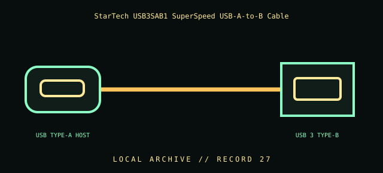

[ INDIVIDUAL COMPONENT // CABLES & ADAPTERS ]
StarTech USB3SAB1 SuperSpeed USB-A-to-B Cable
StarTech.com USB3SAB1 USB 3.0 Type-A male to Type-B male cable. This entry identifies the documented model and does not claim that visually similar products share its pinout, protocol, capability, or host compatibility.

COMPATIBILITY WARNING: Verify the exact product model, host/device role, signal protocol, electrical requirements, and manual before connection. Connector fit alone does not prove compatibility.
Specifications
| Catalog subcategory | Data, peripheral, and high-speed cables |
|---|---|
| Catalog identity | StarTech.com USB3SAB1 USB 3.0 Type-A male to Type-B male cable |
| Verified protocol / model information | StarTech USB3SAB1 product page describes USB 3.0 SuperSpeed A-to-B and 1 ft length. USB 3.0/USB 3.2 Gen 1 signaling is up to 5 Gbit/s at the protocol level; negotiated throughput depends on host, peripheral, and cable condition. |
| Connector ends | USB TYPE-A HOST → USB 3 TYPE-B; diagram is schematic, not a pinout map. |
Physical & electrical compatibility
Connects USB host Type-A to a peripheral Type-B receptacle that supports the matching USB mode. Type-B 3.0 plugs differ from USB 2.0 Type-B; never force or confuse the larger connector. It is a data/power bus cable, not a charging-only or USB-C cable.
Archival & handling notes
Keep the exact SKU and 1 ft length label; record the device tested. Inspect the wide Type-B shell, contacts, and cable strain relief, and avoid sharp bends near the connector.
Record provenance, condition, label photographs, exact full part number/revision, host system, and any test method/result. Preserve packaging and source documents with the cable when available.
Manufacturer & standards references
- StarTech — USB3SAB1 SuperSpeed USB 3.0 A-to-B cableManufacturer SKU and connector/data-use information.
- USB-IF — USB 3.2 specifications and documentsPrimary standards organization source for USB data signaling generations.
Manufacturer documentation applies to the cited model; standards references describe the protocol family. Where product revisions or device support vary, the exact manufacturer manual and host documentation take precedence.